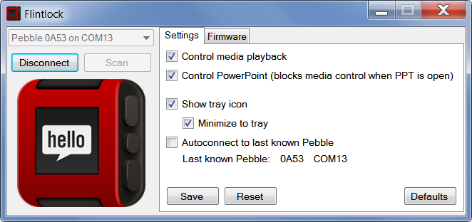

Flintlock!
As you may have guessed, Flintlock is a Windows application you can use to connect your Pebble smartwatch directly to your computer in order to do neat stuff. Flintlock currently only supports a handful of features, but that's expected to change with time (and SDK availability, perhaps!). The main features currently include:
- Controlling slideshow presentations (tested with PPT) and music with the media controls
That's pretty much it. This is what it looks like:

Sending the currently playing song in a variety of media players to the Pebble is a work in progress. Next on the planning are an option to lock the computer when the connection is unexpectedly lost and more importantly firmware/app management. If you have any suggestions beyond that, feel free to post them as an issue.
Releases
Occasionally a version of Flintlock will be considered sufficiently stable and non-explody to be marked as a release and packaged. The current (and inevitably slightly outdated) release is 0.5.4825.30142, which tells me that I need to do something about the numbering scheme as this autogenerated stuff just looks silly.
Thanks
Flintlock would not have existed without the wonderful work of @Hexxeh and all other contributors to Hexxeh/libpebble.